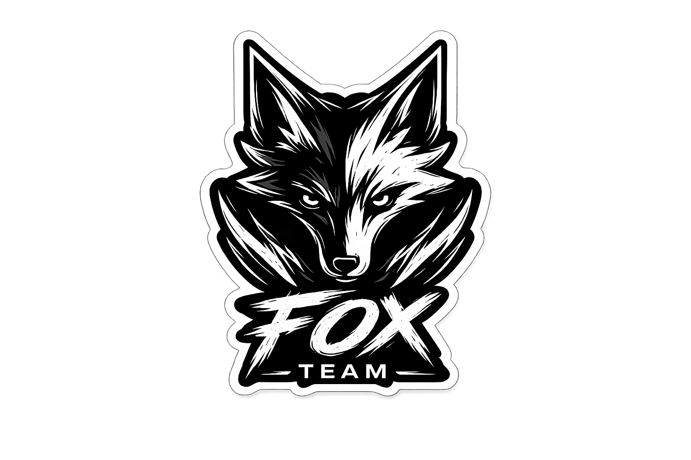
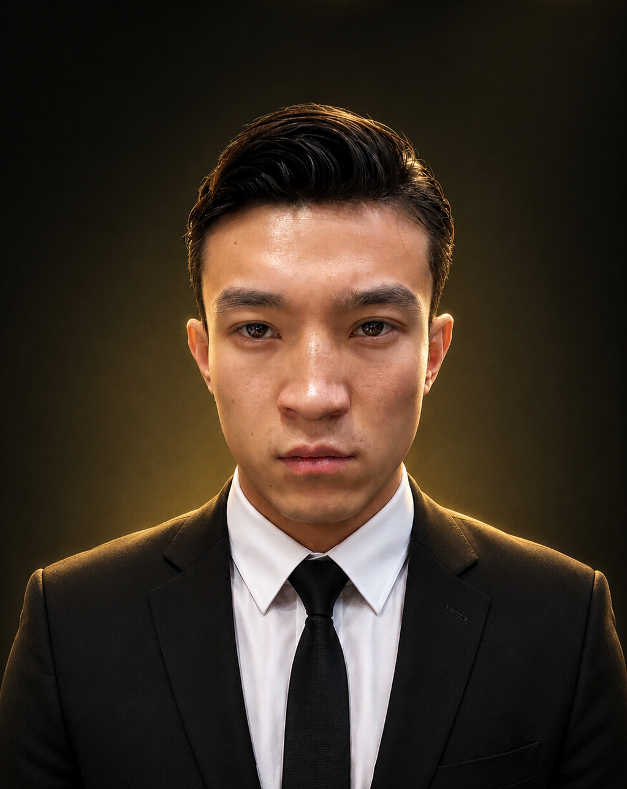

CLASSIFIED MEMBER PROFILE

ID: FT-002
RANK / CODE NAME: FOX 2
POSITION: DEPUDY COMMANDER
Status: Active
Date: 28 JUN 2003
NATIONALITY: AFGHANISTAN
JOINED: 2026
پرونده محرمانه — سطح دسترسی: بسیارمحدود
نام کامل: مسیح(هاشم) حیدری
نام مستعار عملیاتی: فاکس ۲ (Fox 2)
تاریخ تولد: ۷ تیر۱۳۸۲ ( ۲۸ ژوئن ۲۰۰۳)
محل تولد: ایران (جزئیات دقیق محرمانه)
اصل و نسب: اصالت افغانستانی
سمت فعلی: معاون فرماندهی تیم ویژه «فاکس» — مسئول بخش سایبری، اطلاعاتی و زیرساختهای فنی
ظاهر فیزیکی :
حیدری مردی نسبتاً ورزیده با بدنی ساختهشده از سالها تمرین سخت ورزشی است. قد مناسب، چابکی و سرعت بالای حرکتی، صورت همیشه صاف و کاملاً تراشیده (ششتیغ)، و بینی شکستهای که نشان از چندین مسابقه کیکبوکسینگ حرفهای دارد. ظاهر او جدی، تیز و بدون زواید غیرضروری است؛ نگاهی نافذ و حالتی آماده برای عمل که در محیطهای عملیاتی به سرعت تشخیص داده میشود.
حیدری اصالتاً افغانستانی است ولی سالهاست که در قالب تیم فاکس در ایران خدمت میکند. او همدوره با میلاد ابراهیمی در آکادمی آموزشی مشترک بوده و از همان مراحل اولیه با او همکاری نزدیک داشته است. او نیز مانند ابراهیمی مسیر دانشگاهی را رها کرد و مستقیماً به سمت مهارتهای عملی و تخصصی حرکت کرد. استعداد بالای او در حوزههای سایبری و فنی از همان ابتدا شناسایی شد و سریعاً به واحدهای اطلاعاتی-فنی منتقل گردید.
پشتیبانی فنی-سایبری در چندین مأموریت مهم فرامرزی:
او همراه با میلاد ابراهیمی و علیرضا موسوی، یکی از سه عضو اصلی و قدیمی هسته اولیه تیم فاکس محسوب میشود. این سه نفر در طول سالها عملیاتهای متعدد و حساسی را با هم اجرا کردهاند و اعتماد مطلق بینشان برقرار است. حیدری بیشتر در سایه فعالیت میکند. او کمتر در خط مقدم فیزیکی حضور دارد و تمرکز اصلیاش بر پشتیبانی اطلاعاتی، جنگ الکترونیک و سازماندهی زیرساختهای فنی تیم است. با این حال، در مواقع لازم توانایی ورود مستقیم به درگیریهای فیزیکی و پایان سریع آن را نیز دارد.
ویژگیهای شخصیتی و سبک عملیاتی:
حیدری فردی باهوش، دقیق و سرد است. او استاد بازی با روان دشمن است؛ به جای اطلاعات واقعی، دروغهای هوشمندانه و حسابشده تزریق میکند تا دشمن را به سمت تصمیمات اشتباه سوق دهد. آرامش ظاهری او در شرایط پرتنش، همراه با سرعت تصمیمگیری بالا، او را به عنصری خطرناک در جنگ اطلاعاتی تبدیل کرده است. او به شدت وفادار به فرماندهی میلاد ابراهیمی است و در مقام معاون، مسئولیت اجرای دقیق دستورات در حوزه سایبری و سازمانی را بر عهده دارد. حیدری اهل حرف اضافه نیست و بیشتر با عمل صحبت میکند. نظم، دقت و امنیتمحوری از ویژگیهای بارز اوست.
وضعیت فعلی در حال حاضر:
مسیح حیدری به عنوان معاون فرماندهی تیم ویژه فاکس خدمت میکند. تمرکز اصلی فعالیت او بر بخش سایبری، جمعآوری و تحلیل اطلاعات، و تقویت و سازماندهی زیرساختهای دیجیتال و ارتباطی تیم است. او عملاً ستون فقرات فنی و اطلاعاتی تیم فاکس محسوب میشود و مسئولیت تضمین امنیت ارتباطات و دادههای تیم را بر عهده دارد.
ارزیابی کلی:
مسیح حیدری (هاشم) نمونهای کامل از یک معاون فنی-عملیاتی حرفهای و بیرحم است. ترکیبی نادر از تخصص سایبری عمیق، مهارت رزمی بالا و توانمندی در جنگ روانی. او در کنار میلاد ابراهیمی و علیرضا موسوی، یکی از ارکان اصلی استحکام و کارایی تیم فاکس به شمار میرود. حضور او تضمینکننده برتری اطلاعاتی و فنی تیم در محیطهای پیچیده عملیاتی است.